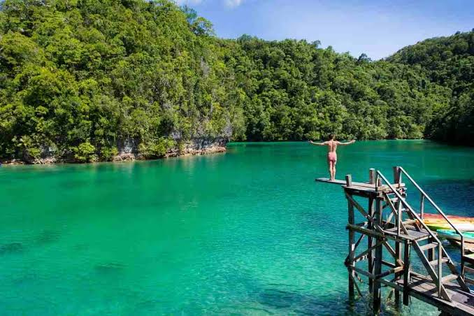
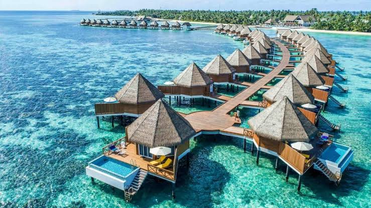
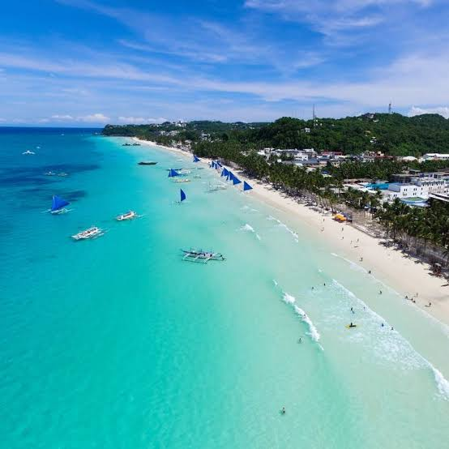

Philippines
The Philippines, officially the Republic of the Philippines, is an archipelagic country in Southeast Asia. In the western Pacific Ocean, it consists of 7,641 islands which are broadly categorized in three main geographical divisions from north to south: Luzon, Visayas, and Mindanao.
Discover the best islands in the Philippines and find out why the country has been recognized as being home to the most beautiful island in the world. Find out which most beautiful islands in the Philippines you should explore first from over 7,000 islands to choose from in this guide.
As an archipelago, the Philippines is rich in natural wonders for its tourist spots. With over 7,000 islands and islets, joining island-hopping tours is one of the best things you can do here to see as many of these famous islands in the Philippines, including the best-hidden islands in the Philippines.
Here are some of the places to travel in the Philippines.
Siargao
Siargao is a tear-drop shaped island in the Philippine Sea situated 196 kilometers southeast of Tacloban. It has a land area of approximately 437 square kilometres. The east coast is relatively straight with one deep inlet, Port Pilar.
| Other Places to visit: |
|---|
| Magpupungko Beach |
| Sugba Lagoon |
| Guyam Island |
| Alegria Beach |
Coron
Coron Island in the Philippines is a popular diving and snorkeling location partly due to the abundant and thriving coral reefs. The Coral Garden is a specific site with particularly accessible coral and fish species. Snorkeling and diving tours to the Coral Garden often encompass stops to nearby shipwrecks.
| Other places to visit |
|---|
| Kayagan Lake |
| Malcapuya Island |
| Twin lagoon |
| Sunken Japanese Wrecks |
Boracay
Boracay is a small island in the central Philippines. It's known for its resorts and beaches. Along the west coast, White Beach is backed by palm trees, bars and restaurants. On the east coast, strong winds make Bulabog Beach a hub for water sports. Nearby, the observation deck on Mount Luho offers panoramic views over the island. Offshore, coral reefs and shipwrecks are home to diverse marine life.
| Other places to visit |
|---|
| Diniwid |
| Mount Luho |
| Puka Shell Beach |
| Crystal Cove Island Resort |